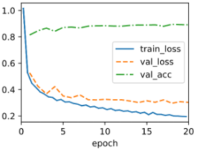

Conda setup, SoftMax, MLPs, Forward and Backward Propagation CNNs
Overview
This project allows students to refresh and strengthen their understanding of foundational concepts like linear classification and multilayer perceptrons (MLPs), which are important for understanding computer vision and are typically covered in related courses like machine learning, data mining, or other data science classes.
The goal is to help students familiarize themselves with the mathematical concepts, techniques, and frameworks that will be used in the course. Completing this project will prepare students to implement more advanced algorithms and architectures later in the semester.
Part 1: Linear Neural Networks for Classification
Question 1: Visualize 10 images from the dataset.
Question 2: - Hyperparameter analysis
2.1 Try to use different learning rates, plot how validation loss changes.
lr = 0.001lr = 0.1lr = 0.8
With lr = 0.1 the train loss decreases smoothly and monotonic, similarly, the val loss and val
train also have a steady movement. With lr = 0.001 the train loos and the val loss are almost the
same line, and the val acc looks almost flat since it has such a slow learning. Finally, with
lr= 0.8 the trian loss has some points where it even has spikes. The val loss also has a very
irregular movement while the val acc has some minimal spikes. In conclusion the optimal one lies
around 0.1.
2.2 Try to use different batch sizes, how validation and training loss changes?
batch_size = 32batch_size = 512batch_size = 1024
With a 32-batch size the train loss curve is the least smooth but still decreases quickly.
The Val loss drops not until after epoch number 4 and acc has a small increase after 4 as well.
Batch size 512 has a very smooth val loss and train loss and a smooth val acc going slightly up
as well. Finally, batch 1024 looks pretty similar to 512 plateauing val acc at halfway through
the epochs.
Question 3: Explain the overflow and underflow problems in softmax computation,
$\hat y_j = \frac{\exp(o_j)}{\sum_k \exp(o_k)}$. One possible solution to this problem is to subtract
$\bar{o} \stackrel{\textrm{def}}{=} \max_k o_k$ from all entries, explain how this potentially can
solve the overflow problem. Is this solution perfect or you think this solution may cause some other
problems (e.g., NaN)?
Overflow happens when the input values are so large that it takes the result to
infinity or a Nan value which can lead to incorrect probabilities. Underflow when the inputs
are largely negative the exp term can go to almost zero which ends up returning a zero value.
This can lead to a denominator of 0 in the SoftMax function causing errors and Nan or cause
all the probabilities to go to 0, defeating the purpose of distinguish the class prediction.
The suggested solution makes sure that the largest shifted logit is 0 and all others are less
than or equal to 0 basically eliminating the possibility that we exponentiate a very large
positive number. However, this approach does not eliminate the underflow problem which mean
you can still get zeros from very small numbers resulting in infinity. Additionally, if logits
already have infinity or nan shifting won't solve the issue.
Part 2: Multilayer Perceptrons (MLPs)
Question 1: Come up with an example that the gradients vanish for the
sigmoid activation function.
The gradients will vanish for a large positive number. We know the derivative of
the sigmoid function is σ′(x) = σ(x)(1 − σ(x)). Say x=10, if we plug that into our function, we get 0.000045, basically
0, essentially vanishing.
Question 2: Give it a try to add one hidden layer, show how it affects
the results. What if adding a hidden layer with one single neuron, what's the results?
Please discuss what you get and why.
1 hidden layer2 hidden layer1 hidden layer with 1 single neuron
The single hidden layer already trains good, however, with the second layer
we can see a slightly better performance of the val train/loss and there is extra depth
that helps represent the functions better. A second layer with a single neuron clearly
performs arguably worse than the others since we go from 256 to 1.
Question 3: What’s the memory footprint for training and prediction in
the model described in the above example?
Part 3: Basic Convolutional Neural Networks (LeNet)
Question 1: Use different epochs (5, 10, 20) to train your LeNet, plot the
training loss, validation loss, and validation accuracy of each training process, and discuss
how changing training epochs affects the performance.
5 epochs10 epochs20 epochs
We can see that as we increase the epochs, both our train loss and our validation
loss start keep dropping further down, but if we compare the intercept of epoch 5 in the three
plots, it does not change. Adding more epochs just lets our model to run for longer and keep
decreasing our loss. This means that at 5 epochs our model is still undertrained. The losses
are still falling at the end and the accuracy is still climbing. With 10 epochs, our model
performs better, we see a big drop in loss between epochs 4 and 8 and the loss and accuracy
converge. Finally, with 20 epochs our loss keeps going down but slower accuracy stops improving,
there is a slight risk of overfit.
Question 2: Modifying LeNet: Replace average pooling with max-pooling,
replace the Sigmoid layer with ReLU. After doing so, redo the above experiment (Using different
epochs 5, 10, 20), plot the training loss, validation loss, and validation accuracy for each
training process. Discuss the changes compared to the results of original LeNet training
5 epochs10 epochs

20 epochs
We can see that the 5-epoch plot has the smallest gap between train and val loss.
The gap grows as the number of epochs grow. Changing to MaxPool and ReLU resulted in the train
and val loss to drop much earlier improving our results faster. Overall, val accuracy is also
way better than on the previous experiment. For example, at 5 epochs on the second experiment
we had already reached the accuracy the first experiment needed 10 epochs to achieve; and with
20 epochs, val accuracy is better than in any of the firs experiment.
Question 3: Use a different dataset, MNIST(PyTorch, TensorFlow), to do
training and plot training loss/accuracy and test accuracy, and discuss the results.
Avg and Sigmoid
5 epochs10 epochs20 epochs
ReLU and MaxPool
5 epochs10 epochs20 epochs
We can see that for avg and sigmoid, 5 epochs are certainly not enough, and the
accuracy is very low, and val and train loss are very high. This is because the network doesn't
have enough epochs to learn, usually sigmoid has a slow start. With 10 epochs losses stay flat
until epoch 8 ish and then start to drop, which is when val acc starts to rise. This shows that
in that epoch the learning finally starts to kick in. This could be due to the fact that we use
a small learning rate. Finally with 20 epochs we see that same start as with 10 epochs and
notice that val acc starts increasing steadily. This shows that Sigmoid does learn in the end,
it just needs enough time to do it. This happens because with sigmoid, when inputs are far
from 0, the gradients go to 0. Then we have ReLU and MaxPool. From the very beginning
we see that val acc starts nearly at the top, and the losses drop significantly since epoch 1.
This clearly shows that with this approach the network learns faster. With 10 epochs we see that
the losses stay very low and that the accuracy has pretty much flatlined but without overfitting.
At 10 epochs, the accuracy has already maxed out. Finally, with 20 epochs loss continues to drop
but it is basically already at 0, the accuracy stays at the top. This shows that we can keep
training the network for longer, but the peak results come from 10 epochs, no need to keep
training.